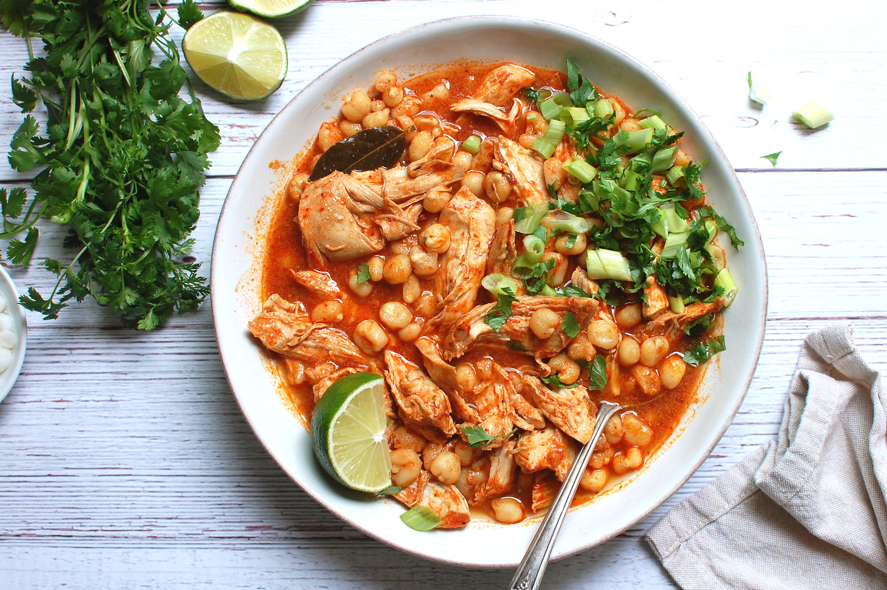

Chicken Posole

The name “pozole” (also spelled posole) is both the stew's name, and the name of one of the staple ingredients, hominy.
Native to Central America, hominy, or pozole, refers to the large corn (or maize) kernels that
have had their hull rand germ removed to make it soft.
This chicken pozole recipe-or pozole rojo con pollo-is a Mexican chicken and hominy stew, made with homemade red chili sauce, spices,
and lots of earthy flavor. Traditionally served for holiday celebrations, pozole can also make a good
dinner with leftovers.
Ingredients
Soup
- 3 to 4 guajillo peppers, sliced (alternate: dried ancho chilis)
- 2 tablespoons vegetable oil
- 1 cup water
- 3 cloves garlic, peeled and gently smashed
- ½ white onion, chopped
- 1½ pounds boneless chicken breast
- 2 bay leaves
- 1 tablespoon dried oregano
- 1 pint (2 cups) chicken broth, or enough to cover the chicken in the pot
- 20 ounces canned hominy, drained (or two cans' worth)
- 1 teaspoon kosher salt, and more to taste
Garnish
- 3 scallions, sliced thin
- 1 avocado, diced
- 1 bunch radishes, sliced thin
- ½ bunch cilantro, roughly chopped
- ¼ small head of cabbage, thinly sliced
Steps
- In a medium-sized pot, heat the chilis with the oil over medium heat. Stir. When soft, add ½ cup water (careful; it may spatter a bit),
the garlic, and onion. Cook, stirring frequently, until softened, about 10 minutes.
- Purée the chili, garlic and onion mixture, adding water as necessary to loosen it enough to blend. Strain well through a fine strainer,
pressing with a spatula. Discard the residue.
- Slice the chicken into strips and add it to the pot with the bay leaves, oregano, chicken broth, strained chili sauce, and hominy.
Simmer, partially covered, for one hour. Add the salt. Taste for seasoning and adjust.
- Ladle into bowls, and serve with the garnishes on a plate, family-style.
Home